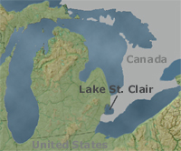

Although there is no map for it, the native habitat of the zebra mussel was/is the Balkans, Poland, as well as what was once the Soviet Union.
This is a map of the place that is thought to be where zebra mussels first arrived in the US, Lake St. Clair.
Image from the National Atlas of the United States
This is a map of where the zebra mussel is invasive to.
Image from the USGS Multimedia Library
"North America in 1988 in Lake St. Clair, a small water body connecting Lake Huron and Lake Erie. Biologists believe the zebra mussels were picked up in a freshwater European port in the ballast water of a ship and were later discharged into the Canadian side of Lake St." (Source: The National Atlas of the United States) This excerpt from an article on the atlas site is very interesting, because it clearly indicates the introduction of zebra mussels was purely accidental. Although we do not know for sure that the European ships was the catalyst for bringing zebra mussels to the US, we do know that if that is the way that it happened, then it was 100% accidental.